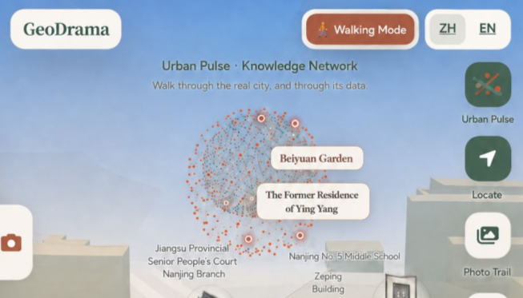
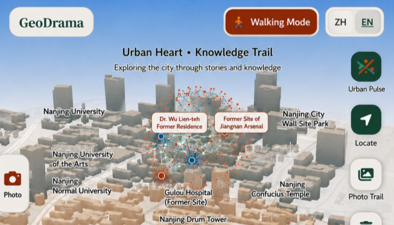

GeoDrama deployed in Nanjing’s historic urban district: AI-generated, location-triggered narratives during a free walk without a predefined route.
Six perceived attributes as stimuli (S) of the SOR model


Central Nanjing, 5 April–20 August 2026; platform and generation settings held constant
27 items · 9 constructs (three items each; five-point Likert scale)
Three multilayer perceptrons (SPSS 27.0), one per SEM equation:
Ten-fold cross-validation; predictors ordered by normalised importance and compared with the SEM β order